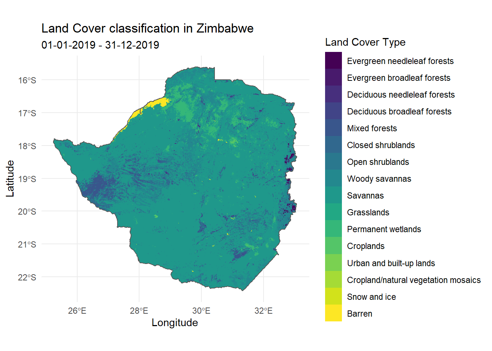

| Data set description: | Land cover classification in Zimbabwe |
| Source: | Moderate Resolution Imaging Spectroradiometer (MODIS) |
| Details on the retrieved data: | Land cover classification (Land Cover Products) in Zimbabwe in 2019. |
| Spatial and temporal resolution: | Annually averaged data at a 500 meter spatial resolution. |
MODIS is an instrument aboard the Terra and Aqua satellites, which orbits the entire Earth every 1-2 days, acquiring data at different spatial resolutions. The data acquired by MODIS describes features of the land, oceans and the atmosphere. A complete list of MODIS data products can be found on the MODIS website.
MODIStspMODIStsp is an R package for downloading and preprocessing time series of raster data from MODIS data products. The package’s name is an acronym for ‘MODIS Time Series Processing’. This tutorial will focus on downloading and visualising land cover data, but the same process can be followed with other MODIS data products as well.
MODIStspThe MODIStsp package can be downloaded from CRAN as follows.
install.packages("MODIStsp")The first step of downloading data is to identify which MODIS data product to use.
This tutorial will use the Land Cover Products, which uses different classification schemes to identify types of land cover. The primary land cover scheme identifies 17 classes defined by the International Geosphere-Biosphere Programme (IGBP) as detailed in their user guide.This product contains annually averaged data, collected bi-annually allowing for hemispheric differences in the growing seasons, and enabling the product to capture two growth cycles if necessary.
The product IDs for each of these products can also be found on the data product page.
This tutorial will use the ‘Land Cover Type Yearly L3 Global 500m’ product with the product IDs MCD12Q1 (Combined Aqua and Terra Product ID)
The product layers (original MODIS layers, quality layers and spectral indexes) available for a given product can be retrieved using the following function.
library(MODIStsp)
MODIStsp_get_prodlayers("MCD12Q1")## $prodname
## [1] "LandCover_Type_Yearly_500m (MCD12Q1)"
##
## $bandnames
## [1] "LC1" "LC2" "LC3"
## [4] "LC4" "LC5" "LC_Prop1"
## [7] "LC_Prop2" "LC_Prop3" "LC_Prop1_Assessment"
## [10] "LC_Prop2_Assessment" "LC_Prop3_Assessment" "LC_QC"
## [13] "LC_LW"
##
## $bandfullnames
## [1] "Land Cover Type 1 (IGBP)*"
## [2] "Land Cover Type 2 (UMD)*"
## [3] "Land Cover Type 3 (LAI/fPAR)*"
## [4] "Land Cover Type 4 (NPP/BGC)*"
## [5] "Land Cover Type 5: Annual Plant Functional Types classification"
## [6] "FAO-Land Cover Classification System 1 (LCCS1) land cover layer"
## [7] "FAO-LCCS2 land use layer"
## [8] "FAO-LCCS3 surface hydrology layer"
## [9] "LCCS1 land cover layer confidence"
## [10] "LCCS2 land use layer confidence"
## [11] "LCCS3 surface hydrology layer confidence"
## [12] "Land Cover QC"
## [13] "Binary land/water mask derived from MOD44W"
##
## $quality_bandnames
## NULL
##
## $quality_fullnames
## NULL
##
## $indexes_bandnames
## NULL
##
## $indexes_fullnames
## NULLNote how the \$bandfullnames define each of the \$bandnames.
MODIStsp() functionMODIStsp() is the main function of the MODIStsp package, and allows us to download MODIS data products. While this is a very comprehensive function and we only a very few of its arguments in this tutorial, the entire list of arguments can be found in the MODIStsp documentation.
The MODIStsp() function provides two ways of downloading data, namely, through a GUI (interactive) or through an R script (non-interactive). This tutorial will focus on the non-interactive execution.
To download the IGBP land cover classification data in Zimbabwe, first we download the boundary of Zimbabwe with the geoboundaries() function from the rgeoboundaries package and save it on our computer.
# remotes::install_github("wmgeolab/rgeoboundaries")
# install.packages("sf")
library(rgeoboundaries)
library(sf)
# Downloading the country boundary of Zimbabwe
map_boundary <- geoboundaries("Zimbabwe")
# Defining filepath to save downloaded spatial file
spatial_filepath <- "LandCoverData/zimbabwe.shp"
# Saving downloaded spatial file on to our computer
st_write(map_boundary, paste0(spatial_filepath))Then we use the MODIStsp() function to download the IGBP land cover classification data.
To download data in Zimbabwe, we use the boundary of Zimbabwe we downloaded. So in the MODIStsp() function we set the spatmeth argument as “file” and set the spafile argument as the path of the map we saved.
Since IGBP land cover classification data is provided annually and dated on the 1st of January each year, the start-date and end_date arguments should contain the 1st of January of each year for which we want the data to be downloaded.
The start-date and end_date arguments define the period for which we want the data to be downloaded.
Note that this tutorial uses a test username and password. The user and password arguments should be the username and password corresponding to your earthdata credentials.
library(MODIStsp)
MODIStsp(gui = FALSE,
out_folder = "LandCoverData",
out_folder_mod = "LandCoverData",
selprod = "LandCover_Type_Yearly_500m (MCD12Q1)",
bandsel = "LC1",
user = "mstp_test" ,
password = "MSTP_test_01",
start_date = "2019.01.01",
end_date = "2019.12.31",
verbose = FALSE,
spatmeth = "file",
spafile = spatial_filepath,
out_format = "GTiff")The downloaded files are saved in subfolders within the defined output folder.
A separate subfolder is created for each processed original MODIS layer, Quality Indicator or Spectral Index with an image for each processed date. The images will be placed in the following folder structure and named using the following naming convention.
<defined_out_folder>/<shape_file_name>/<product_name>/<layer_name>/<prodcode>_<layername>_<YYYY>_<day_of_year>.<extension>
The following example uses the geom_raster() function from the ggplot2 package to visualise the downloaded IGBP land cover classification in Zimbabwe
# install.packages(c("sf", "raster", "here", "ggplot2", "viridis"))
# remotes::install_github("wmgeolab/rgeoboundaries")
library(rgeoboundaries)
library(sf)
library(raster)
library(here)
library(ggplot2)
library(viridis)
library(dplyr)
# Downloading the boundary of Zimbabwe
map_boundary <- geoboundaries("Zimbabwe")
# Reading in the downloaded landcover raster data
IGBP_raster <- raster(here::here("LandCoverData/zimbabwe/LandCover_Type_Yearly_500m_v6/LC1/MCD12Q1_LC1_2019_001.tif"))
# Transforming data
IGBP_raster <- projectRaster(IGBP_raster, crs = "+proj=longlat +ellps=WGS84 +datum=WGS84 +no_defs")
# Cropping data
IGBP_raster <- raster::mask(IGBP_raster, as_Spatial(map_boundary))
# Converting the raster object into a dataframe and converting the IGBP classification into a factor
IGBP_df <- as.data.frame(IGBP_raster, xy = TRUE, na.rm = TRUE) %>%
mutate(MCD12Q1_LC1_2019_001 = as.factor(round(MCD12Q1_LC1_2019_001)))
rownames(IGBP_df) <- c()
# Renaming IGBP classification levels
levels(IGBP_df$MCD12Q1_LC1_2019_001) <- c( "Evergreen needleleaf forests",
"Evergreen broadleaf forests",
"Deciduous needleleaf forests",
"Deciduous broadleaf forests",
"Mixed forests",
"Closed shrublands",
"Open shrublands",
"Woody savannas",
"Savannas",
"Grasslands",
"Permanent wetlands",
"Croplands",
"Urban and built-up lands",
"Cropland/natural vegetation mosaics",
"Snow and ice",
"Barren",
"Water bodies")
# Visualising using ggplot2
ggplot() +
geom_raster(data = IGBP_df,
aes(x = x, y = y, fill = MCD12Q1_LC1_2019_001)) +
geom_sf(data = map_boundary, inherit.aes = FALSE, fill = NA) +
scale_fill_viridis(name = "Land Cover Type", discrete = TRUE) +
labs(title = "Land Cover classification in Zimbabwe",
subtitle = "01-01-2019 - 31-12-2019",
x = "Longitude",
y = "Latitude") +
theme_minimal()
MODIS website: https://modis.gsfc.nasa.gov/
MODIStsp vignette: https://cran.r-project.org/web/packages/MODIStsp/vignettes/MODIStsp.html
MODIStsp land cover data product page: https://modis.gsfc.nasa.gov/data/dataprod/mod12.php
Last updated: 2022-06-29
Source code: https://github.com/rspatialdata/rspatialdata.github.io/blob/main/land_cover.Rmd
Tutorial was complied using: (click to expand)
## R version 4.0.3 (2020-10-10)
## Platform: x86_64-w64-mingw32/x64 (64-bit)
## Running under: Windows 10 x64 (build 18363)
##
## Matrix products: default
##
## locale:
## [1] LC_COLLATE=English_United States.1252
## [2] LC_CTYPE=English_United States.1252
## [3] LC_MONETARY=English_United States.1252
## [4] LC_NUMERIC=C
## [5] LC_TIME=English_United States.1252
##
## attached base packages:
## [1] stats graphics grDevices utils datasets methods base
##
## other attached packages:
## [1] here_1.0.1 sf_0.9-7
## [3] MODIStsp_2.0.5 raster_3.5-15
## [5] sp_1.4-5 nasapower_4.0.7
## [7] viridis_0.5.1 viridisLite_0.3.0
## [9] rnaturalearth_0.1.0 terra_1.5-17
## [11] rdhs_0.7.2 DT_0.17
## [13] forcats_0.5.1 stringr_1.4.0
## [15] dplyr_1.0.4 purrr_0.3.4
## [17] readr_1.4.0 tidyr_1.1.4
## [19] tibble_3.1.6 tidyverse_1.3.1
## [21] openair_2.9-1 leaflet_2.1.1
## [23] ggplot2_3.3.5 rgeoboundaries_0.0.0.9000
##
## loaded via a namespace (and not attached):
## [1] colorspace_2.0-3 ellipsis_0.3.2 class_7.3-17
## [4] rgdal_1.5-23 rprojroot_2.0.2 fs_1.5.2
## [7] httpcode_0.3.0 rstudioapi_0.13 farver_2.1.0
## [10] hexbin_1.28.2 urltools_1.7.3 fansi_0.4.2
## [13] lubridate_1.8.0 xml2_1.3.2 codetools_0.2-16
## [16] splines_4.0.3 cachem_1.0.6 knitr_1.33
## [19] jsonlite_1.8.0 broom_0.8.0 cluster_2.1.0
## [22] dbplyr_2.1.1 png_0.1-7 rgeos_0.5-5
## [25] hoardr_0.5.2 mapproj_1.2.8 compiler_4.0.3
## [28] httr_1.4.2 backports_1.4.1 assertthat_0.2.1
## [31] Matrix_1.2-18 fastmap_1.1.0 cli_3.2.0
## [34] htmltools_0.5.2 tools_4.0.3 gtable_0.3.0
## [37] glue_1.4.2 gdalUtilities_1.2.1 maps_3.4.0
## [40] rappdirs_0.3.3 Rcpp_1.0.7 cellranger_1.1.0
## [43] jquerylib_0.1.4 vctrs_0.3.8 crul_1.2.0
## [46] countrycode_1.2.0 nlme_3.1-149 crosstalk_1.2.0
## [49] xfun_0.30 rvest_1.0.2 lifecycle_1.0.1
## [52] rnaturalearthhires_0.2.0 zoo_1.8-8 MASS_7.3-53
## [55] scales_1.1.1 hms_1.1.1 parallel_4.0.3
## [58] RColorBrewer_1.1-2 yaml_2.2.1 curl_4.3.2
## [61] memoise_2.0.1 gridExtra_2.3 sass_0.4.0
## [64] triebeard_0.3.0 latticeExtra_0.6-29 stringi_1.5.3
## [67] highr_0.9 e1071_1.7-4 storr_1.2.5
## [70] bitops_1.0-7 rlang_0.4.10 pkgconfig_2.0.3
## [73] evaluate_0.15 lattice_0.20-41 htmlwidgets_1.5.4
## [76] labeling_0.4.2 tidyselect_1.1.0 magrittr_2.0.1
## [79] R6_2.5.0 generics_0.1.2 DBI_1.1.2
## [82] pillar_1.7.0 haven_2.5.0 withr_2.5.0
## [85] mgcv_1.8-33 xts_0.12.1 units_0.6-7
## [88] modelr_0.1.8 crayon_1.5.1 KernSmooth_2.23-17
## [91] utf8_1.1.4 rmarkdown_2.11 jpeg_0.1-9
## [94] grid_4.0.3 readxl_1.3.1 data.table_1.14.2
## [97] reprex_2.0.1 digest_0.6.27 classInt_0.4-3
## [100] munsell_0.5.0 bslib_0.3.1
Corrections: If you see mistakes or want to suggest changes, please create an issue on the source repository or submit a pull request Contributions: If you want to contribute or collaborate on the project, please see the guidelines for collaborating Reuse: Text and figures are licensed under Creative Commons Attribution CC BY 4.0.